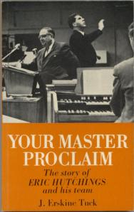

Eric Hutchings has died8.26pm. I have my pen again! It arrived by recorded delivery this morning. I became very tired last evening and went to bed before 10.30pm. I was asleep when Freda came up. Towards morning I woke and found myself worrying about Freda, and had difficulty in getting back to sleep again. I took Freda a cup of tea in bed, after which she had a bath while I prepared breakfast; then I dressed the swelling again which showed definite signs of coming to a head. After breakfast I answered all the letters, including one to Art Katz of Ben Israel Ministries, USA. He had been reading Judgment on Britain in ORU [Oral Roberts University] Library, and asked for his own copy. I also wrote to Bro. Frost postponing (if we need to) our visit to Reigate on Monday. About 11.30am I went shopping for bread, greengroceries, medical dressings etc., which took me until 12.45pm. I got bread and a lettuce for Eva [Eva Marsden], which I delivered on the way home. It began to rain heavily as I arrived at Eva’s, and we had a stormy afternoon. We had our salad lunch here in the TV lounge, and watched the news on ITV. After lunch I stuck the labels on the stencils I cut yesterday. Several stencils needed to have some of the figures re-typing: the keys had become clogged and I cleaned some of them yesterday. I had a phone call from Burrows Lea during the afternoon. Ray Branch will be glad to see us on Monday at 2.00pm if Freda is able to travel. I parcelled up Reg’s 23 stencils and went to the Post Office to get them off to him. On the way back I called at Hunting Lambert’s travel agency to enquire about cheap flights to Tulsa; Freda had earlier phoned Delta Airlines. Both of us have been feeling we would like to attend another seminar at ORU, and especially to see the City of Faith. Fares to the USA have greatly increased since the collapse of Laker Airways. The stand-by fare to Atlanta is currently £176, and it costs $184.26 from Atlanta to Tulsa, or $109 if the fare is booked before leaving for the USA. While we were having tea we watched the 1941 Arthur Askey film, I Thank You, which was being shown on TV for the first time. After tea I did the washing up, then we watched Gardeners’ World from Maidencombe, near Torquay, where Harry Rayson has won the Garden News award. It was of special interest as the garden is on a slope like ours. Another job I did this afternoon before going in to town was to make Librafilm jackets for two of the books I have purchased in recent months, Ray Branch’s book on Harry Edwards—The life story of the great healer, and Homoeopathy by Dr G. Ruthven Mitchell of Brighton. Eric Hutchings died on Wednesday. We heard the sad news from Dora Rowden in a letter we received this morning. His death was announced yesterday on Trans World Radio. Eric was greatly used in an evangelistic ministry, especially in South Africa, which he visited many times. It was Billy Graham, about 1946, who told Eric that the Lord was going to use him. Eric had a great Crusade at Bingley Hall in 1960, and we came to know him quite well. He was never without financial burdens, however, having a radio ministry to maintain. On two occasions I was able to help him in a small way. At Bingley Hall, when it looked as though the budget would not be met, he acted on my [written] suggestion that some members of the congregation might be willing to donate £5. They were, and the need was met. On another occasion he asked in a newsletter for prayer for bills to be paid. I sent him a little note to the effect that “money pays bills, not prayer”, and he printed it, exactly as I had typed it, in his “International Daily News Bulletin.” This Bulletin provided an invaluable commentary on world events, and the moral and spiritual issues facing the nation. It was Eric who first apprised me of the real situation in South Africa, and the propaganda war against that country. He ministered many times for Pastor Rowlands during his visits there. Eric was nothing like the popular conception of what an evangelist should look like. He was short, bespectacled and tubby, and not very inspiring in his delivery, but the Lord greatly used him. God bless you, Eric. |
 |
MONDAY 11th OCTOBER 1982
Previous chapter || Next chapter || Index || Search |